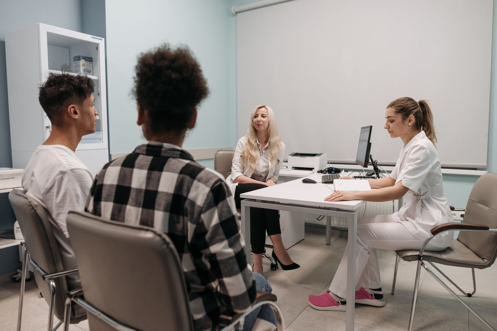

Space to talk
Describe what feels difficult and what you hope to get back to. Your perspective helps shape care.
Your movement is part of your life. Understanding both is where thoughtful physiotherapy starts.

The activities you enjoy, the demands of your day and your questions all belong in the conversation.
Describe what feels difficult and what you hope to get back to. Your perspective helps shape care.
Understand the assessment and the options discussed with you. Ask questions before you begin.
Your clinician should explain what is involved and seek your consent throughout your care.
Review the plan together. Your needs and goals may change over time.
A physiotherapist may look at your movement, discuss relevant history and explore your activity goals. The assessment is a starting point for an individual plan, not a promise of a particular outcome.
Learn about assessmentsThe routines, tasks and activities you want to discuss.
What you would like to understand and work towards.
A plan discussed clearly, with any clearance needs considered.
Rehabilitation can include guided sessions, clinician-provided home activities and opportunities to review. Clear communication helps keep those parts connected.
Explore care focuses, share your preferences and discuss which clinician may be appropriate for your needs.
Tell us what you would like to get back to.